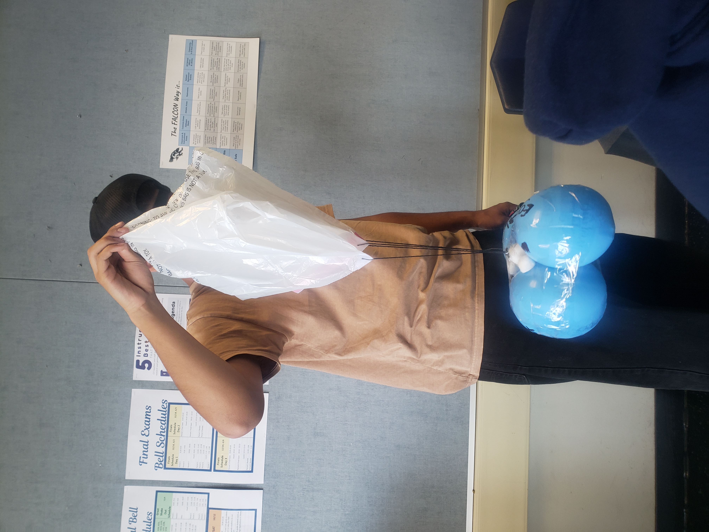

This week we began an "Egg Drop" project. The goal of the project is to be able to drop an egg from a 3 story building
and keep it intact. We completed the BOM and CAD for our project. We decided to
use balloons below the egg to cushion the impact, and the trash bag as a
parachute to provide air-resistance to slow the fall and reduce the
force of impact.
*3/27/2023 - 3/31/2023*

This week we concluded our egg drop project. We created the actual egg drop parachute and
attached the balloons with tape to the egg, with the egg in the middle of the balloons to
maximize the cushioning and minimize the impact on the egg. We then tested the actual
egg drop and we were successful in keeping the egg intact.